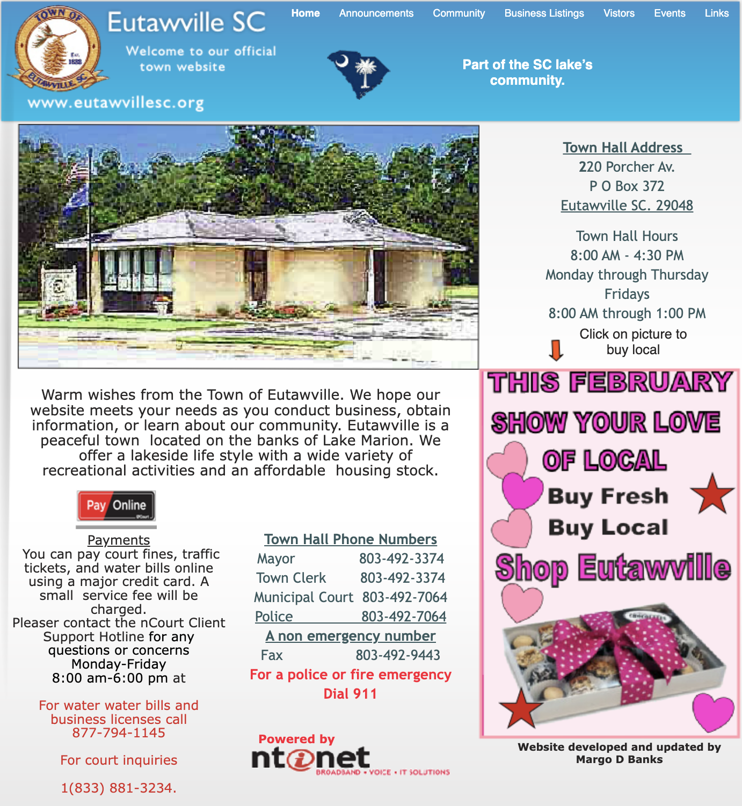

For this project, I wanted to choose an outdated website and utilize my design skills to reformat the site in a more intuitive, modern format. My mind immediately went in the direction of town websites, as many of them are extremely outdated and old. I then discovered Eutawville, one of the least populated towns in my home state of South Carolina. The current site, https://www.eutawvillesc.org/, looks like below:
Based on this, I identified the following issues with the current design:
After evaluating the website's current issues as described above, I turned to Figma to work on a redesign to address the issues and improve the overall look of the page. I designed a version of the page for large computers, tablets, and mobile devices, all of which are within the Figma file embedded below.
The key changes between the different screen sizes are listed below:
When making changes to the website, I sought to improve on the user experience while keeping the content the same. I wanted users to be able to access the same information, just in a much more accessible way. To do this, I did the following:
With all of these changes, I hope a user would be able to better navigate the page and locate whatever information they are hoping to find. Additionally, by improving contrast, users should also be
Keeping all of this in mind, I utilized HTML and CSS to build a functioning prototype of the new website. This website can be accessed at https://ashtonglover.github.io/eutawville-redesign/. The website is designed to be responsive, so it should work on any screen size.
The above is an embedded version of the website just to get a quick overview. It shows the page with many of the mobile features due to the reduced width, such as the hamburger nav-bar and column format for the contact information. To view all of the different states for the website, click the link.
Desiging a responsive web application proved rather difficult. Keeping multiple screen sizes in mind and ensuring that all elements resize appropriately takes careful consideration and planning. The process of identifying the key issues, mocking up my pages in Figma, and then working on the actual product assisted greatly in this process. By iteratively working on the project, I feel as though I was able to address user concerns and rework the page to be accessible for all.